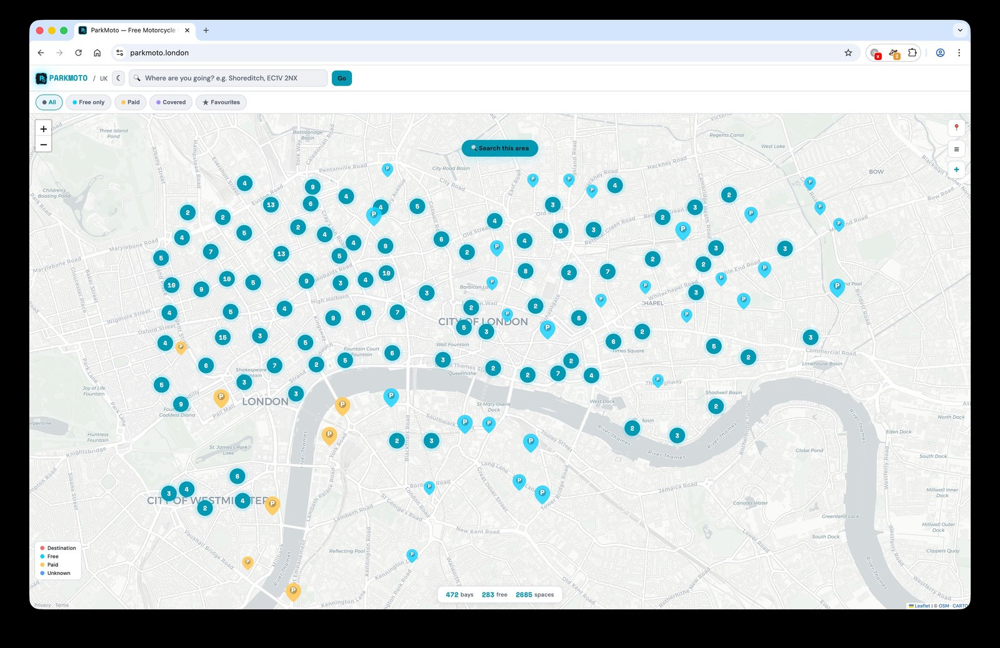
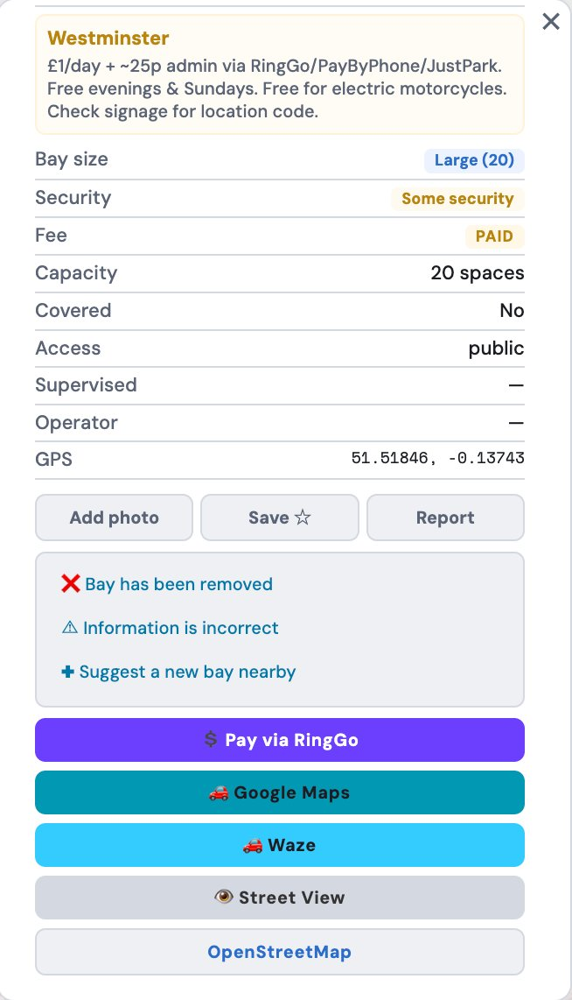
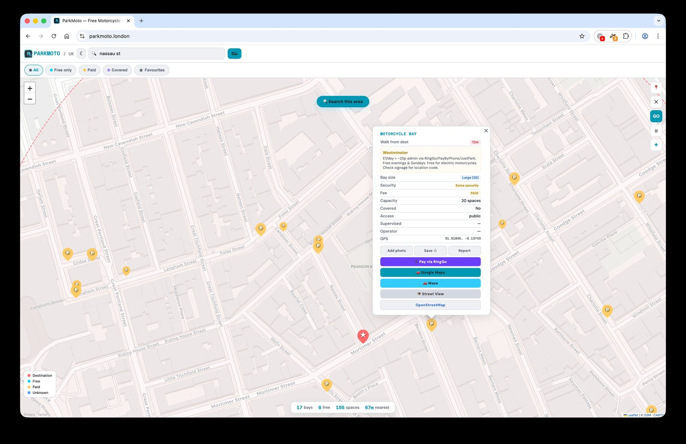

02 Build notes ParkMoto
How I built ParkMoto
April · MMXXVI 4 min read by ABS Astreon
I started riding last year, and most of what I know about parking a motorbike in London I learned by getting it wrong. Where the bays are. Which boroughs charge. Which painted M/C boxes have faded so badly the warden won't honour them. Nobody writes any of this down in one place. You ride, you ask, you remember, and over time you build a private map in your head that nobody else can see.
ParkMoto came out of one specific Wednesday. I had a meeting in the City and spent twenty minutes circling looking for a bay, switching between Google Maps, Waze, and a TfL page that hadn't been updated in months. Each one had a different version of the same information. None of them agreed. I parked, did the meeting, came home, and started building.
The data was the actual problem
I assumed the hard part would be the map. It wasn't. The hard part was that there is no single source. London has 32 boroughs plus the City of London, and they each handle motorcycle bays differently. Some publish the data, most don't. Some have it on their council website as a PDF. Camden is the only one with a proper public API, and even Camden's data wasn't fully on OpenStreetMap when I started. So I went borough by borough, cross-referencing whatever each council had against what was on OSM and adding what was missing. The contributions history is public if you want to see it: more than 300 spots so far, spread across boroughs, with Freedom of Information requests still in flight to the councils that don't publish at all. The numbers will jump when those come back.
That was the moment I understood what I was actually building. Not a map. A bridge between official records that nobody talks to each other and a public dataset that everyone can use.

The choice I almost got wrong
Early on I started thinking about ParkMoto as a business. There are already paid apps that do something like this. Subscriptions, accounts, ad models, it all looked tractable. I had a spreadsheet of pricing tiers open for about an afternoon before I closed it.
The thing I'd been frustrated by, sitting on the bike at a red light fumbling through three apps, was that this information was gated. Some of it behind logins, some behind paywalls, some behind out-of-date council pages. If I built another paid app I'd be doing exactly the thing I'd built it to escape. So I made it free, no accounts, no tracking, and pushed every correction back to OpenStreetMap. The data improvements help every other app and every other rider, not just the ones using ParkMoto.
The trade-off is that the map is sometimes slow, because OSM tile servers are donated infrastructure and they have rate limits. I think that's a fair price.

What I'd say to another rider

Finding a bay shouldn't be a research project. ParkMoto puts every motorbike parking spot in London on one map, with the borough fee rules layered on top, and you don't have to register or install anything to use it. It might be slow some days because it's running on free tiles, but it's accurate and it's free, and if you spot a bay that's missing or wrong you can fix it in three taps.
The folk knowledge in your head is real and useful. ParkMoto is where it can live where everyone can read it.